보스포러스 해협 (6) - 대리전은 끝났다
게시: 2026-03-12T06:30:41+09:00
유럽이 동아시아에 비해 빠른 산업화와 기술 발전을 이룬 주요 원인 중 하나는 국가간의 교역과 소통, 문화 교류가 활발했기 때문입니다. 문익점이나 최무선의 일화에서도 알 수 있듯이, 한중일 간에는 교류가 거의 없다보니 어느 나라에서 개발된 신기술이 다른 나라로 전파되고, 거기서 더 개량되어 역수입되는 일이 별로 없었지만, 유럽에서는 그런 것이 활발했습니다. 펙상이 폭발탄을 쏘는 직사포인 펙상포를 만든 주요 동기 중 하나가 영국 해군의 제해권에 프랑스가 도전할 수 있도록 하기 위한 것이었지만, 아이러니컬하게도 펙상포는 몇 년 가지 않아 영국에서도 그 기본 원리를 파악하고 그와 유사한 대포인 8인치 포를 제작할 수 있게 되었습니다.
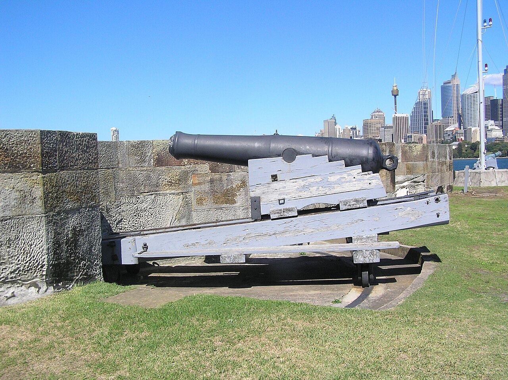
(1825년부터 제작되기 시작하여 1838년 경에야 표준화된 영국 해군의 8인치 "shell gun", 즉 폭발탄 발사포입니다. 구형탄(roundshot)을 쏘는 기존 함포 중 가장 큰 것이 32파운드 포였는데, 그 구경이 대략 6.3인치였으니까, 기존 대포보다 상당히 더 큰 대포입니다.) 그럼에도 불구하고 영국 해군은 이 신형 대포를 채용하는 것에 소극적이었습니다. 이유는 간단했습니다. 원래 자신이 1위라고 생각하는 집단은 변화를 싫어합니다. 이미 1위인데 혹시 바꿨다가 역효과 나면 니가 책임질 거냐? 라는 거지요. 게다가 실질적인 문제도 있었습니다. 당시 유럽에서 가장 많은 전열함과 가장 많은 함포를 가지고 있던 나라가 영국이었으므로, 그걸 다 신형 펙상포로 바꾸는 것이 예산 문제 때문에 쉽지 않았던 것입니다. 1838년 패스트리 전쟁의 베라크루즈 전투에서 프랑스 해군이 펙상포의 위력을 입증했음에도, 영국 해군은 '멕시코 같은 2류 군대와, 그것도 적함대가 아니라 낡은 요새와 교전한 결과에 불과'하다며 회의적인 입장이었습니다. 또 프랑스 해군조차도 한꺼번에 모든 함포를 펙상포로 교체한 것이 아니었습니다. 일부 함포들만 펙상포로 교체했을 뿐이었으므로, 베라크루즈 전투에서 프랑스 프리깃함들도 기존 함포에서 구형탄을 7771발 쏘는 동안 펙상포의 폭발탄은 고작 177발 밖에 쏘지 않았습니다.
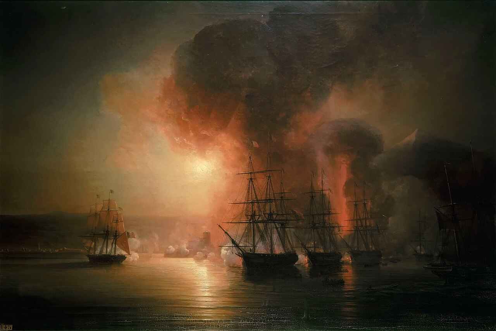
(이미 소개드린 1838년 베라크루즈 전투에서의 프랑스 함대의 모습입니다. 이때 이미 프랑스 함대는 증기선 메테오르(Météore) 호와 파에통(Phaéton) 호를 동반하고 있었는데, 이 두 증기선은 좁은 베라크루즈 항구 근처에서 범선 프리깃함들을 이리저리 밀어주고 끌어주는 예인선 역할을 했습니다.) 기술적으로 훨씬 우월한 것이 분명한데도 채택하지 않는 것을 보면 영국 해군이 매우 무능하고 구태스러운 조직이라고 비난하기 쉽습니다만, 영국 해군이 그렇게 급격한 변화를 거부한 것도 나름 고충이 있기 때문이었습니다. 나폴레옹 패망 이후의 19세기는 유럽이 산업혁명으로 정신없이 바뀌던 때였습니다. 그러다보니 영국 해군에겐 펙상포 말고도 고민해야 하는 것이 매우 많았습니다. 이미 증기선도 나오고 있었고, 나무가 아닌 쇠로 만들어진 선박도 나오고 있었습니다. 물론 쇠로 만든 증기선도 나왔지요. 일부에서는 이제 나무로 만든 범선의 시대는 끝났고, 이제 제해권을 위해서는 강철로 만든 선체에 증기기관을 얹은 새로운 군함이 있어야 한다는 주장도 당연히 튀어 나왔습니다.
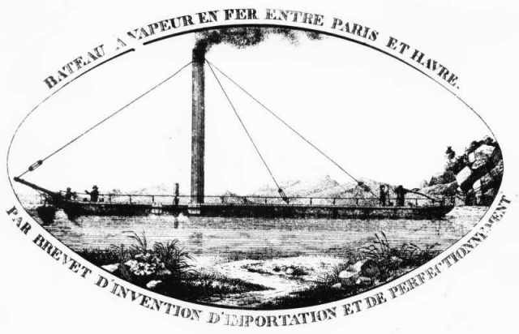
(세계 최초로 바다를 건넌 철제 선박인 아론 맨비(Aaron Manby) 호입니다. 당연히 영국에서 만들었고, 증기기관을 달았습니다. 그래봐야 길이 32미터 정도의 소형 선박이었고, 최대 속도는 8노트에 불과하여 범선보다 빠르지도 않았습니다. 이걸 주문한 영국 해군 장교 네이피어(Charles Napier)도 프랑스 센(Sein)강에서 화물 및 여객선으로 쓰려고 만든 것일 뿐 군함으로 쓸 생각은 전혀 하지 않았습니다. 이 선박은 파리에서 인기를 끌며 돈을 꽤 번 것 같은데, 정작 네이피어는 이런 배를 5척 더 만들려다 파산했고 이 배도 팔아야 했습니다.) 하지만 많은 고참급 영국 해군 함장들은 그런 주장에 대해 '바다와 해전에 대해 아무것도 모르는 애들이나 하는 소리'라며 비웃었습니다. 실제로 당시 증기선은 잔잔한 바다에서는 쓸모가 많았으나 거친 대양에서는 버티기가 어려웠습니다. 게다가 한 번 출항하면 영국 항구로 기항할 때까지 몇 달이 걸릴지 알 수 없던 시절, 매일 많은 양의 석탄을 때야 했던 증기선은 먼 바다로 나갈 수가 없었습니다. 또, 적 포탄에 구멍이 뚫리더라도 나무로 된 함체는 해상에서도 쉽게 수리할 수 있었지만 쇠로 된 함체는 (구멍이 뚫리든 크게 구부러지든) 바다 위에서 수리하는 것이 사실상 불가능했습니다. 특히 쇠로 만든 소형 선박을 표적함으로 삼고 포격 시험을 해보고는 영국 해군은 기겁을 했습니다. 뚫리든 뚫리지 않든, 대포알을 얻어맞은 철판은 선박 내부에 무수히 많은 작은 쇠조각 파편을 흩뿌렸던 것입니다. 목조 선박도 대포알을 맞으면 뚫리면서 나무 파편을 만들지만, 철제 선박 정도로 심하지는 않았습니다. 전함을 철판으로 만들 경우 내부의 수병들은 떼죽음을 당할 판이었습니다. 무엇보다, 철로 만든 배는 소금물을 뒤집어 쓰면 순식간에 시뻘겋게 녹이 슬기 마련이었는데, 그 유지보수 비용이 얼마가 들지 아무런 연구가 없었습니다. 그런저런 이유 때문에 증기선은 항구에서 거대한 전열함들을 밀어주는 예인선 정도로 쓰였고, 철선은 특히 군함으로는 사용되지 않았습니다.
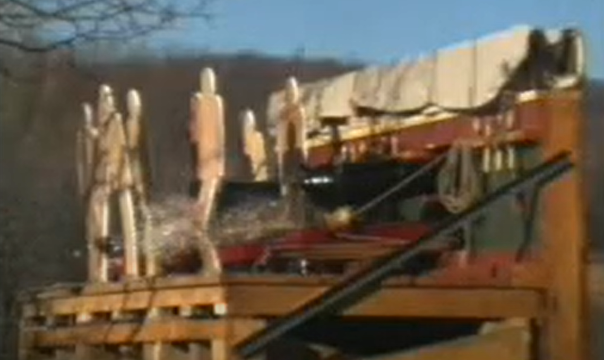
(덕중의 덕은 양덕이라고, 당시 해전에서 대포알에 피격될 때 생기는 나무 파편이 얼마나 치명적인지 보여주기 위해 전열함의 포갑판을 본 떠 만든 세트에 실제 대포까지 발사해가며 실험을 하는 모습입니다.) 하지만 기술의 진보는 아무리 핑계를 찾아도 거부할 수 없는 법입니다. 그렇게 신기술에 대한 저항이 심했던 영국 해군마저 충격에 빠뜨린 사건이 드디어 발생합니다. 바로 크림 전쟁 초기인 1853년 11월 30일, 흑해 남쪽에서 벌어진 시놉(Sinop) 해전이었습니다. 이 시놉 해전은 근대화된 러시아 함대가, 구식 목조 범선으로 이루어진 오스만 투르크 함대를 일방적으로 학살한 전투로 흔히 알려져 있습니다. 그러나 사실 알고 보면 러시아 함대도 오스만 함대와 동일하게 목조 범선으로 구성되어 있었고, 두 함대 모두 예인선 역할을 주로 하는 증기선을 각각 2~3척씩 보유하고 있어서, 두 함대의 기술적 차이를 보면 딱 하나, 러시아 함대만 펙상포를 갖추고 있었다는 점뿐이었습니다. 러시아 함대도 모든 함포를 펙상포로 교체한 것은 아니었습니다. 전열함들의 1단 포갑판의 포들만 68파운드 펙상포를 갖추고 있었습니다. 실은 오스만 함대를 위축시킨 것은 러시아 함대가 펙상포로 무장하고 있다는 점이 아니었습니다. 러시아 함대는 전열함 6척에 프리깃함 2척, 예인선 역할을 하던 증기선 3척인 꽤 큼직한 함대인 것에 비해, 오스만 함대는 전열함은 1척도 없이 프리깃함 7척에 더 작은 코르벳함 3척, 증기선 2척뿐으로서, 체급이 달랐습니다. 그래서 원래 보급품 수송선 호위가 주임무였던 오스만 함대는 러시아 함대를 발견하자마자 시놉 항구로 대피했던 것입니다. 다만 오스만 함대는 이제 시놉 항구로 들어와서 해안 포대의 엄호를 받을 수 있으므로 러시아 함대가 감히 공격해오지 못할 거라고 안심하고 있었습니다. 베라크루즈 전투의 소식이 오스만 함대에게는 전해지지 않았던지, 여전히 군함은 해안 요새와의 대결에서 무조건 불리하다고 믿고 있었던 것입니다. 심지어 일부 군함에서는 선원들이 항구에 하선하여 휴식하도록 허락했습니다. 하지만 오스만 함대가 완전히 안심하고 있던 것에 비해, 시놉 항구의 지형은 그다지 유리한 편이 아니었습니다. 보통 천혜의 항구는 수심이 깊어서 큰 배가 들어올 수 있다는 점 외에도, 깊숙한 만에 위치해 있거나 긴 곶으로 둘러싸여 먼 바다에서 밀려오는 거센 파도로부터 보호를 받는 장점을 가지고 있습니다. 그런데, 시놉은 고대 폰투스(Pontus) 왕국의 수도 시노페(Sinope)가 자리잡고 있던 천혜의 항구였는데도, 그 지형이 흑해를 향해 뻥 뚫려 있었습니다.
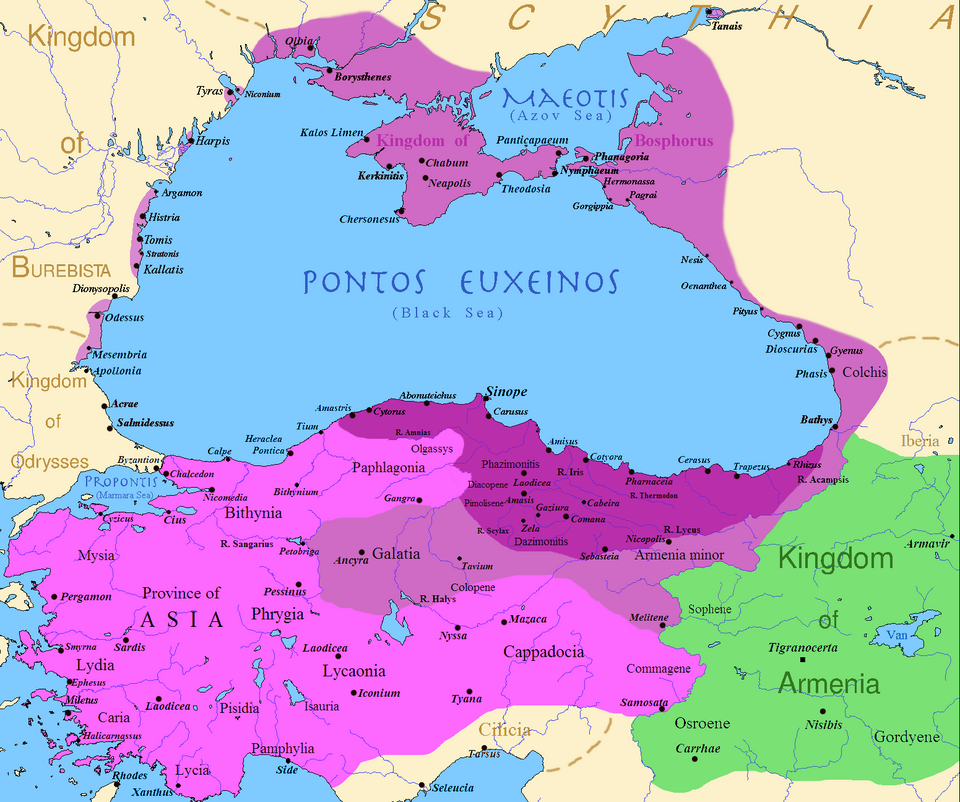
(시놉은 저 폰투스 왕국의 수도 시노페(Sinope)의 자리에 남은 항구 도시입니다. 폰투스 왕국은 그리스 계열의 왕국이라고 할 수 있지만, 그 왕인 미트리다테스 왕가는 자신들을 페르시아 계열로서 다리우스 1세의 후손이라고 주장했습니다. 폰투스 왕국은 대왕이라고 불리던 미트리다테스 6세때 절정기에 달하여 에게해에 접한 소아시아의 그리스 도시들까지 모두 정복했는데, 불행히도 그러면서 로마 제국과 맞닥뜨리게 됩니다. 미트리다테스 대왕은 폼페이우스에게 패배하면서 왕국을 잃고 결국 자살합니다. 폼페이우스는 훗날 케사르와 삼두정치를 한 그 폼페이우스 맞습니다.)
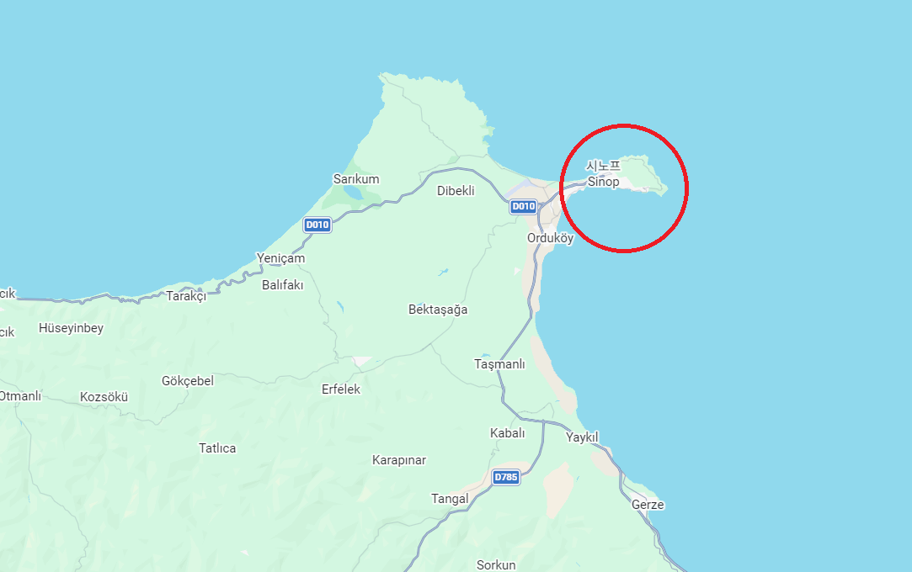 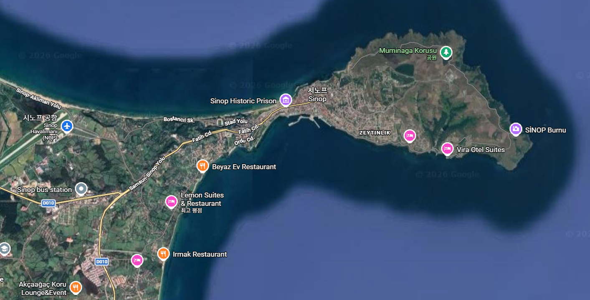
(시놉의 지형은 저렇게 북쪽 방향만 곶으로 막혀 있고, 서쪽은 그냥 뻥 뚫려 있습니다. 저러고도 천혜의 항구 소리를 듣는 이유는 흑해의 특성 때문인데, 흑해의 거친 파도는 언제나 북쪽에서 불어오는 바람 때문에 생기는 것이라서, 북쪽만 막혀 있으면 안전한 항구가 되는 것입니다.)
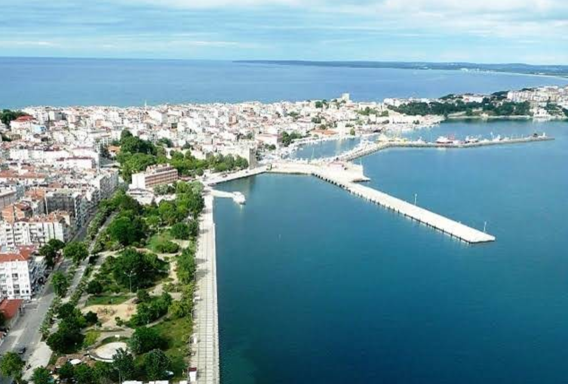
(다만 지금은 시놉은 그다지 번성한 항구가 아니고, 관광용 여객선이나 접안하는 정도의 항구가 되었습니다. 그 이유는 남쪽에 높은 산맥이 있어서 현대적인 물류에는 좋지 않아서, 훨씬 더 동쪽에 있는 삼순(Samsun) 및 트라브존(Trabzon)에게 주요 항구 자리를 빼앗겼기 때문입니다.) 이런 지형상의 특징은 러시아 함대에게 '해볼 만하다'라는 자신감을 주었고, 러시아 함대는 그대로 시놉 항구로 밀고 들어가 닻까지 내린 뒤, 거기 정박한 오스만 군함들 및 해안 포대들과 격렬한 포격전을 벌였습니다. 그 결과는 펙상포의 위력 입증이었습니다. 믿었던 오스만 해안 포대들은 몰락해가는 오스만 투르크답게 그다지 전투 준비가 잘 되어 있지 않았고, 러시아 함대가 직격으로 쏘아대는 펙상포의 폭발탄에게 속절없이 무너졌습니다. 특히 오스만 함대에 대한 펙상포의 효과는 러시아 함대조차 놀랄 정도로 좋았습니다. 나무로 만들어진 함체에 박힌 뒤 잠시 뒤 폭발하는 작렬탄은 오스만 프리깃함들을 글자 그대로 찢어놓으며 삽시간에 화재를 일으켰습니다. 과거 같으면 2~3 시간 동안 맹렬한 포격을 해야 백기를 올렸을 오스만 기함 아우니 알라(Auni Allah) 호는 전투 시작 불과 30분 만에 박살이 나서 해변에 좌초되었습니다. 다른 모든 배들도 그렇게 고의 좌초되거나 폭발했으며, 오직 증기선 1척만 도망쳐서 그 비보를 이스탄불에 알릴 수 있었습니다. 이후 6일 동안이나 시놉 항구 전체가 러시아 함대의 포격을 받아야 했고, 오스만 해군은 무려 2700명의 사상자를 냈습니다. 러시아 함대의 사상자수는 250명 정도에 불과했습니다.
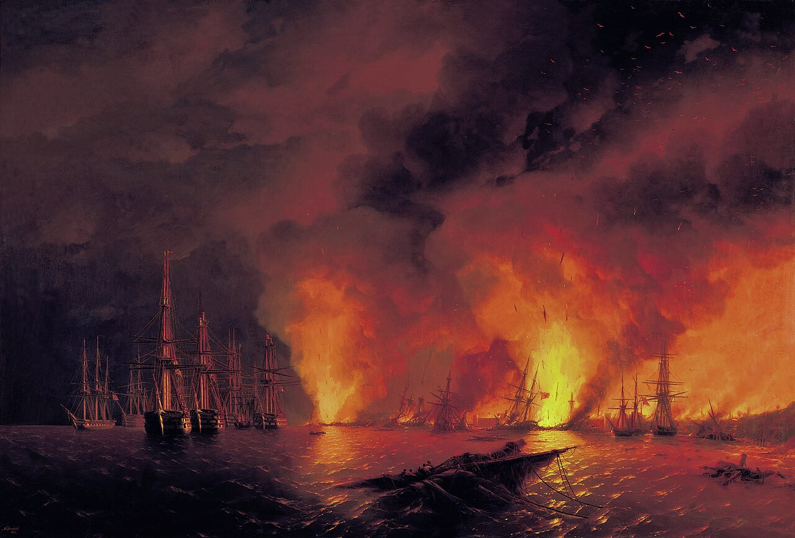 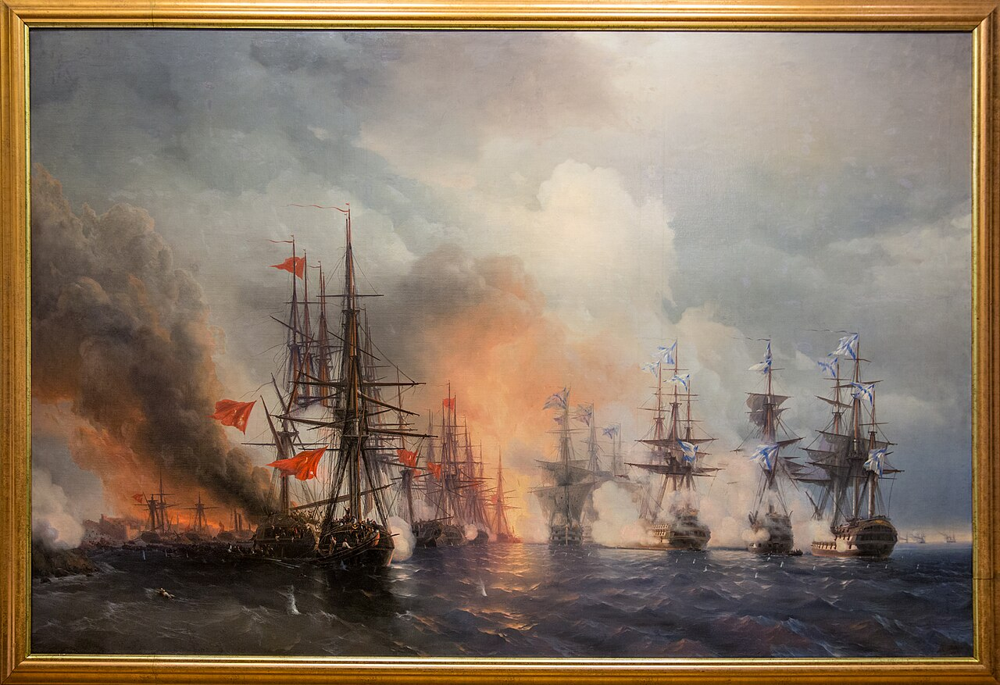 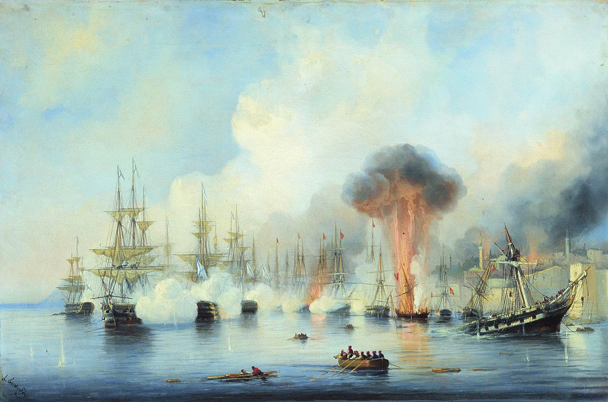
(시놉 해전을 그린 여러 작품들입니다. 시놉 해전은 러시아에서는 우리의 한산대첩처럼 중요시되는 전투입니다.) 그 도망친 증기선에는 오스만 해군을 지원하던 영국인이 타고 있었고, 이 해전의 결과는 즉각 유럽 전역에 알려졌습니다. 이 사건은 단순히 오스만 해군이 큰 타격을 입었다는 것 정도로 받아들여지지 않았습니다. 이제 러시아 흑해 함대가 당장 내일이라도 이스탄불 앞바다에 나타나 이스탄불을 불바다로 만들 수 있다는 뜻이었기 때문이었습니다. 여태까지 오스만 투르크가 러시아와 진흙탕 속에서 잘 싸우고 있다면서 팔짱을 끼고 구경만 하던 영국과 프랑스에게는 당장 난리가 났습니다. 오스만 투르크의 역할이 러시아의 지중해 진출을 막아내는 것이었는데, 이제 당장 보스포러스 해협이 러시아 손에 넘어가게 될 판국이었으니까요. 결국 영국과 프랑스는 오스만 투르크에 파병을 결의합니다. 이로써 오스만을 앞세워 러시아를 견제하던 대리전으로 시작한 전쟁이 영국과 프랑스가 직접 참전하는 혈전으로 바뀌게 됩니다.